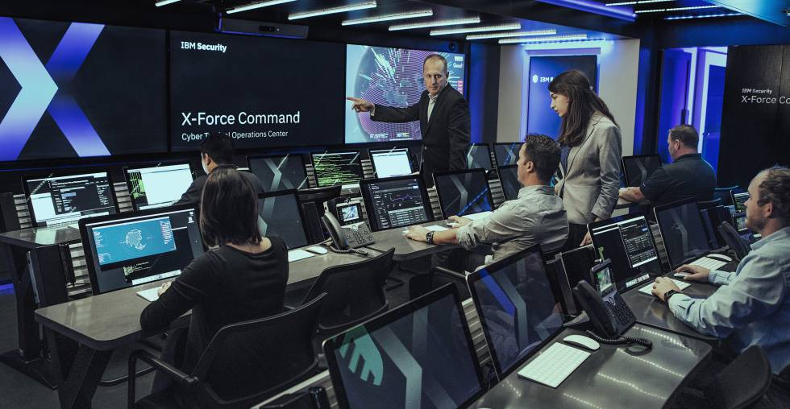

Protección de datos
El servicio más importante que ofrece una consultoría IT es el de proteger los datos de las empresas.
Identificar qué información es la más importante y qué consecuencias tendría perderla, analizar las debilidades,
determinar las posibilidades de que eso pase e implantar soluciones es parte fundamental de su trabajo.
Entre esos servicios de seguridad informática están:
Proteger ante la acción de malwares.
Evitar que el personal no autorizado entre en determinadas redes.
Hacer copias de seguridad, determinando cuál es el backup más adecuado para tu empresa.
Evitar que personas ajenas intercepten y accedan a los datos.
Gestionar contraseñas.
Garantizar que la actividad de la empresa no se vea interrumpida por cualquier inconveniente informático.
Mantenimiento de sistemas informáticos
Además de esa protección, una consultoría informática también se encarga de gestionar y controlar los sistemas informáticos.
El objetivo es que de los equipos informáticos se encargue gente experta, evitando pérdidas de tiempo que permitirán a encargados
y empleados centrarse en el negocio al cien por cien. Algunos de esos servicios de mantenimiento informático son:
Gestionar y mantener los servidores.
Ofrecer soluciones web, de correo, de hosting o de cloud computing.
Realizar inventario de equipos.
Monitorizar y gestionar las redes.
Dar soporte al usuario.
Distribuir el software de forma automatizada.
Ofrecer servicios de migración.
Más allá de los servicios
El campo de la informática puede parecer un tanto frío. Que todo pase detrás de computadoras y que muchas veces las palabras que usan no se entienden lo hace un mundo distante. Una consultoría informática debe saber orientar a sus clientes siendo próximos. Por eso es esencial que las decisiones se tomen conjuntamente. Para ello, además de los conocimientos y experiencia del consultor IT, deben entrar en juego sus habilidades comunicativas. También es importante saber adaptarse al presupuesto del que dispone la empresa contratante. Teniendo en cuenta los recursos y sus necesidades se encontrarán las soluciones adecuadas para cada situación.


| Oficinas | Oficinas servicios informáticos | Tecnologia | última generación |
|---|